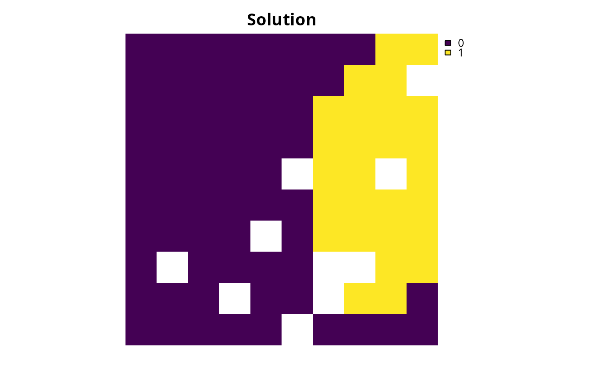

Create a multi-objective systematic conservation planning problem. This
function is used to combine multiple single-objective
problem() objects together for subsequent multi-objective optimization.
After constructing this object, it can be customized by specifying
a multi-objective optimization approach
for generating solutions (see approaches).
A solver (see solvers) can also be added customize optimization solver
software and settings.
After building the problem, the solve() function can be used to identify
solutions.
Arguments
- ...
problem()objects. Each argument corresponds to a single-objective conservation planning problem that will be combined into a multi-objective problem. All of these problems must share the same planning units, zones, and decision variable types. They may have different cost and feature data, as well as objectives, targets, constraints, and penalties.- problem_names
charactervector with a name for each problem in.... Defaults toNULL, such that the problem names are defined automatically.
Details
Systematic conservation planning often involves balancing
multiple, often competing, objectives (Giakoumi et al. 2025).
For example, planners may want to
minimize costs, maximize provisioning of ecosystem services, and
minimize representation shortfalls for a set of threatened species.
Additionally, in multi-use planning, land use decisions may need to conserve
biodiversity, meet food demands, and provide adequate housing supply
(Neubert et al. 2025).
Although each of these objectives can be manually formulated
(i) independently using separate problem() objects or
(ii) as a single problem() using multiple linear constraints
(see add_linear_constraints()), multi-objective optimization provides a
framework for jointly optimizing all of them together
(Williams and Kendall 2017).
Here, each objective is formulated as a separate problem() object,
and then combined together with the multi_problem() function.
Although each of these problem() objects must have exactly the same
planning units, zones, and decision types, they can have different
objectives, features, targets, feature weights, and penalties.
Additionally, they may also have different cost data and features.
Note that any constraint specified in one of the problem() objects
will be applied during all stages of multi-objective optimization.
For example, this means that if one of the problem() objects has
locked in constraints (per add_locked_in_constraints()), then
these constraints will be applied during all stages of multi-objective
optimization. As such, we recommended adding constraints to only one of the
problem() objects to reduce processing time.
Additionally, since budgets specified in budget-limited objectives (e.g.,
add_min_shortfall_objective()) and targets under the
minimum set objective (i.e., add_min_set_objective()) are
(effectively) treated as constraints, they will also be applied during
all stages of multi-objective optimization.
References
Giakoumi S, Richardson AJ, Doxa A, Moro S, Andrello M, Hanson JO, Hermoso V, Mazor T, McGowan J, Kujala H, Law E, Álvarez Romero JG, Magris RA, Gissi E, Arafeh-Dalmau N, Metaxas A, Virtanen EA, Ban NC, Runya RM, Dunn DC, Fraschetti S, Galparsoro I, Smith RJ, Bastardie F, Stelzenmüller V, Possingham HP, and Katsanevakis S (2025) Advances in systematic conservation planning to meet global biodiversity goals. Trends in Ecology and Evolution, 40: 395–410.
Neubert S, McGowan J, Metcalfe K, Hanson JO, Buenafe KCV, Dabalà A, Dunn DC, Everett JD, Possingham HP, Stelzenmüller V, Estep A, Ervin J, and Richardson AJ (2025) Multiple-use spatial planning for sustainable development and conservation. Trends in Ecology and Evolution, 40: 1126–1142.
Williams PJ and Kendall WL (2017) A guide to multi-objective optimization for ecological problems with an application to cackling goose management. Ecological Modelling, 343: 54-67.
See also
See problem() for constructing single-objective problems.
Also see approaches() for multi-objective methods.
Finally, see solve() for details on generating solutions.
Examples
# In this example we select a set of planning units under a conservation
# budget, aiming to meet representation targets for two species groups:
# (1) keystone species (higher ecological priority) and
# (2) iconic species (high social or cultural value).
# import data
con_cost <- get_sim_pu_raster()
keystone_spp <- get_sim_features()[[1:3]]
iconic_spp <- get_sim_features()[[4:5]]
# define a total conservation budget (30% of total cost)
budget <- terra::global(con_cost, "sum", na.rm = TRUE)[[1]] * 0.3
# now create multi-objective problem
mp <-
multi_problem(
keystone_obj =
problem(con_cost, keystone_spp) %>%
add_min_shortfall_objective(budget) %>%
add_relative_targets(0.6) %>%
add_binary_decisions(),
iconic_obj =
problem(con_cost, iconic_spp) %>%
add_min_shortfall_objective(budget) %>%
add_relative_targets(0.4) %>%
add_binary_decisions()
) %>%
add_hier_approach(rel_tol = 0.1, verbose = FALSE) %>%
add_default_solver(gap = 0, verbose = FALSE)
# solve problem
ms <- solve(mp)
# plot solution
plot(ms, main = "solution", axes = FALSE)
